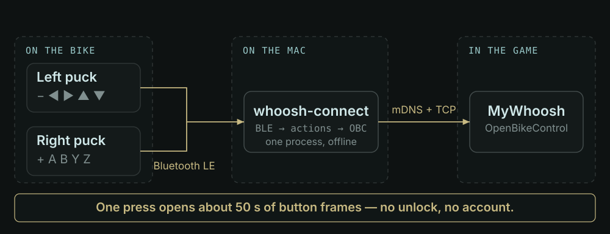
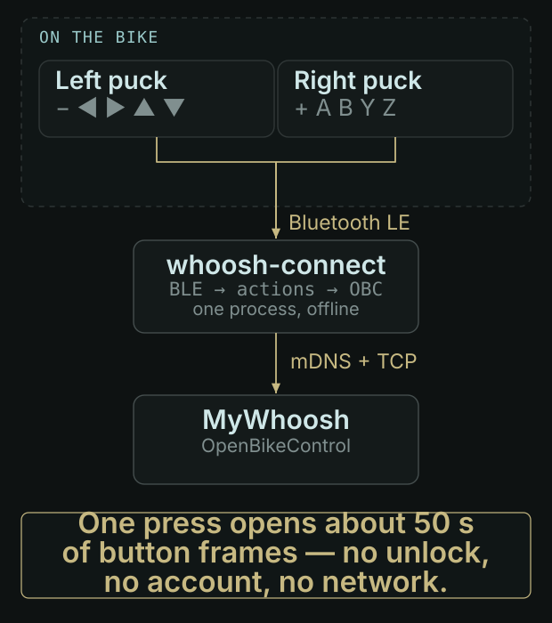
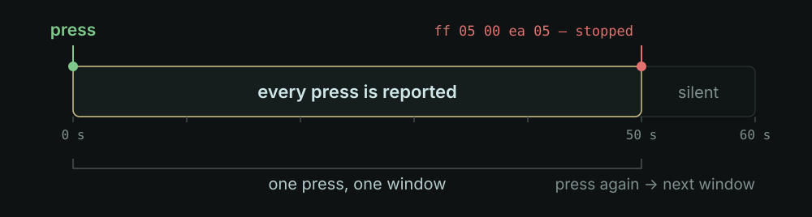
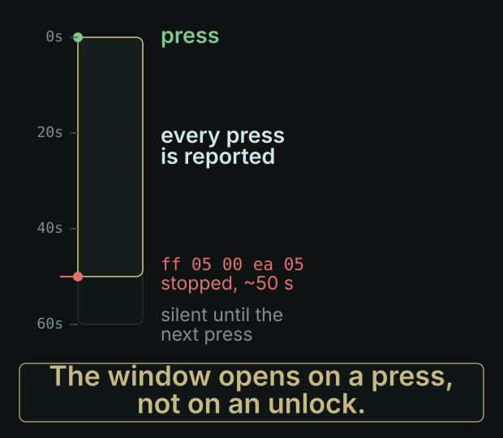
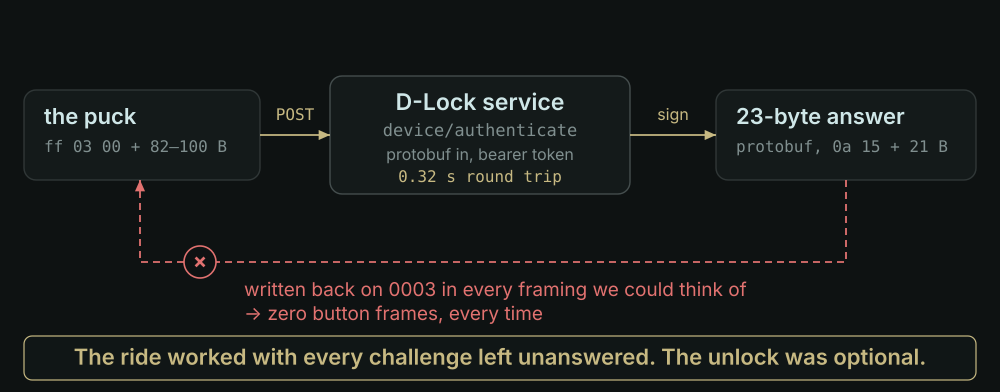
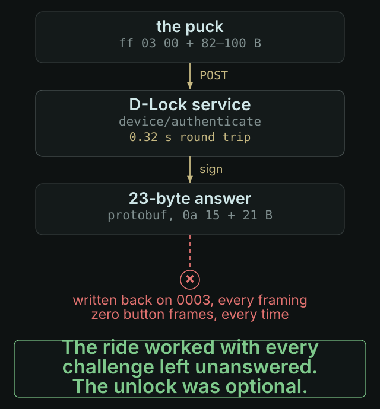
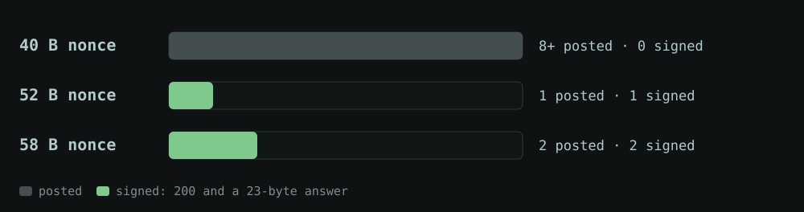
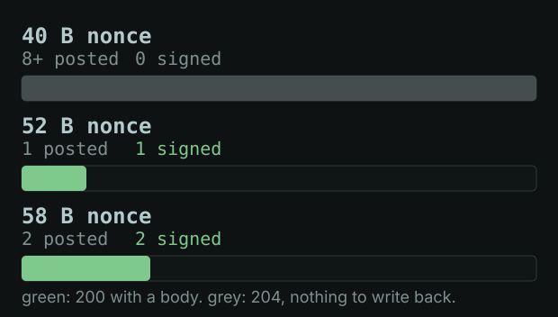

whoosh-connect: Zwift Click shifters, without Zwift
A local bridge from two BLE pucks to MyWhoosh’s OpenBikeControl — no game running, no account, no daily unlock.
Zwift’s Click shifters only talk to Zwift. MyWhoosh has no idea what they are. So I wrote the part in between. It rides now: real shifts, no Zwift, no account.
Code is public tusharpandey13/whoosh-connect · Python, MIT. One process, no cloud.What it has done
- A full ride, on a real bike. 17 gear-up and 18 gear-down presses landed in MyWhoosh as shifts, with the gear counter moving.
- 132 action frames in eight minutes of pressing, 64 heartbeat replies from the game, nothing dropped.
- One puck is enough. The left puck relays both units’ buttons, so the right one can stay asleep.
- 80 tests, all offline. No Bluetooth, no network, no game, no Zwift.
- Two protocol bugs found by the ride, not by reading. Both fixed, both written down.
The bridge is one Python process. It scans for the pucks, keeps one link open, advertises an OpenBikeControl device, and answers the game. No cloud, no key, no login.
The problem, in one ride
Three things stand between a Click and a shift.
- The pucks don’t speak HID. No pairing, no standard controller profile. One notification per button change: a 16-bit mask, with the bits inverted — a zero means pressed.
- The game doesn’t want a keyboard. MyWhoosh accepts a device over OpenBikeControl: mDNS discovery, then TCP, then one small binary message per action.
- The pucks go quiet on their own. About fifty seconds after a press they
announce
stoppedand stop reporting. Nothing you install changes that. Only another press does.
Then there was the fourth problem, which cost the most time: the documentation. The projects that had been here before — BikeControl most usefully — publish their protocol code and stub their unlock code (“This is a stub — contact me”). So the button protocol was readable in an afternoon. What keeps the pucks reporting was not.
What it is
Input
- One or two Click v2 pucks over BLE
- Button notifications on characteristic
0002 - Battery updates, every five seconds or so
Output
- One OpenBikeControl device
- mDNS
_openbikecontrol._tcp, TCP 36867 - Frames like
01 01 01: gear up
Side effects
- Two writes to the puck:
RideOn, thenff 04 00 - A line of log per frame you can read later
- Nothing else: no socket, no account
It never asks for an account, never pairs through Zwift, and never sends a keystroke unless you ask it to.
How it works
- Listen. Scan for manufacturer id
0x094A, connect, writeRideOn, subscribe to0002. - Diff. Each frame carries the whole button mask. Diff it against the previous frame, so a held button is one press, not sixty.
- Serve. Advertise the OpenBikeControl service, accept the game, answer its heartbeat, stream one message per action.


In bytes, one press of the right puck’s + looks like this:
<-23 08 ff ff ff ff 0fnothing held: every bit high<-23 08 ff df ff ff 0fbit 12 low: SHIFT_R, the “+” key->01 01 01gear up, pressed->01 01 00released
The mask is a LEB128 varint of one active-low 16-bit field: a zero bit means pressed, so ff df is a single key.
What the pucks actually say
Everything a Click v2 sends arrives on one characteristic. Six kinds of message, and a status line that ends the session.
| Bytes | What it is |
|---|---|
23 08 … | Button change, active low, full mask |
19 10 … | Battery, percent |
2a 08 … | The puck’s own log line |
ff 03 00 … | Unlock challenge, 82–100 bytes |
ff 05 00 ea 05 | Stopped: no more buttons until a press |
RideOn | Echo of our handshake. No key exchange |


ff 05 00 ea 05 right after the fiftieth
second, and no command reopens it.That rule is the whole ergonomics of the project. You press once at the start of a session and again when the gears stop answering — about a minute apart. Every other design instinct is wrong here: reconnect, reset, re-pair, all of it is slower than a single press.
The unlock that wasn’t the problem
Sooner or later on every connection, the puck sends ff 03 with a challenge.
Answer within 2.4 seconds or it stops reporting. Everything I had read said this was the
gate: keep the pucks unlocked or you get nothing.


Zwift’s own binary named the signer: ZPAuth::ProcessAuthChallenge hands the
payload to DLockRestInvoker::challengeDevice, which posts it to
/api/d-lock-service/device/authenticate with a bearer token and gets protobuf
back. We could call that endpoint ourselves, and did. It is deterministic: the same
payload returned the same 23 bytes two hours later.
It just doesn’t sign everything. Three sizes of challenge arrived, and only the two long ones came back with a body:


204 and an empty body; every 52- and 58-byte one earned 200 and a
23-byte answer.
Source: 11 distinct challenges posted to /device/authenticate,
10–11 Nov 2026. The 40 B count is a floor: “eight or more”. Small
numbers; treat the pattern as a lead, not a law.We wrote that answer back in every framing we could think of, on every characteristic that accepts a write. Silence.
At that point the honest move is not more framings. It is to test the premise. So we
left every challenge unanswered, pressed a button, and rode. It worked. The ff 03
pause is 2.4 seconds of silence, not a lock; what actually gates the buttons is the
fifty-second window from the press.
The unlock, when it happens, only makes the windows longer. whoosh-connect unlock
still does it — one pairing through Zwift, then quit Zwift — because a longer window
between presses is nicer. It is optional, and it always was.
It rides
Fourteen seconds, filmed on the bike. The gear counter walks 13 → 11 → 10 while I press the Click. Zwift is quit. Nothing is unlocked. The bridge is a terminal window on the laptop in the middle of the frame.
Evolution
Every wrong turn in this project was the same wrong turn: believing a result that had no press behind it. A puck that is never pressed sends nothing, so silence proves nothing.
| We believed | What was true |
|---|---|
| The unlock gates the buttons | A press does; the unlock only lengthens the window |
ff 04 00 mutes a locked puck | That capture had no press in it |
| Our write framing was wrong | Untested: the only signed push ran unpressed |
Two real bugs came out of the ride, and neither was the puck’s fault:
- MyWhoosh’s heartbeat is a bare
0x00. The decoder treated it as unknown and returned, dropping the whole buffer — the ping and anything queued behind it. Answering a ping with device status fixed it. - Device status went out once, before the app-info handshake. Send it after, and the game believed the device.
Both were invisible in the protocol notes and obvious in the log, once I stopped assuming the puck was at fault.
Where it is going
Status: it rides, every session. No terminal is needed any more:
make ride-bg runs it detached, and a launchd agent starts it at login and
restarts it if it dies.
Two questions are open, and both are tracked in TODO.md rather than in my head:
- Why the signable challenge only appears sometimes. It would mean windows that never close. Not needed, still interesting.
- Why the right puck never reports a button. Harmless today — the left one relays both — but it is a single point of failure.
One thing I am not building: a fake puck that Zwift could see. macOS will not deliver a locally generated advertisement to a local scan, so a peripheral-side proxy needs a second radio. That is a hardware project, and this one is finished enough to ride.
Research this builds on
None of the protocol knowledge here is mine. It came from people who published their reverse engineering, which is the only reason an afternoon was enough.
The full list, and where the evidence lives
- BikeControl — the Click v2 GATT layout, the opcodes, the active-low mask, and the shape of the unlock. Its unlock code is stubbed in the public repo; its protocol code is not.
- clickbridge — the reset loop, and the first hint that a press is what matters.
- zwoosh — MyWhoosh and OpenBikeControl from the other direction.
- OpenBikeControl — the message format, button ids, mDNS record.
- docs/hardware.md — every frame measured on this unit.
- notes/unlock-analysis.md — the unlock investigation, including the corrections that made it useful.
Not affiliated with Zwift or MyWhoosh. MIT.